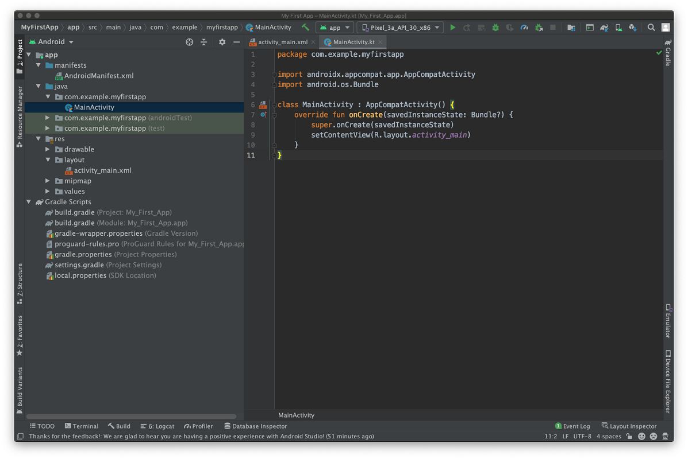
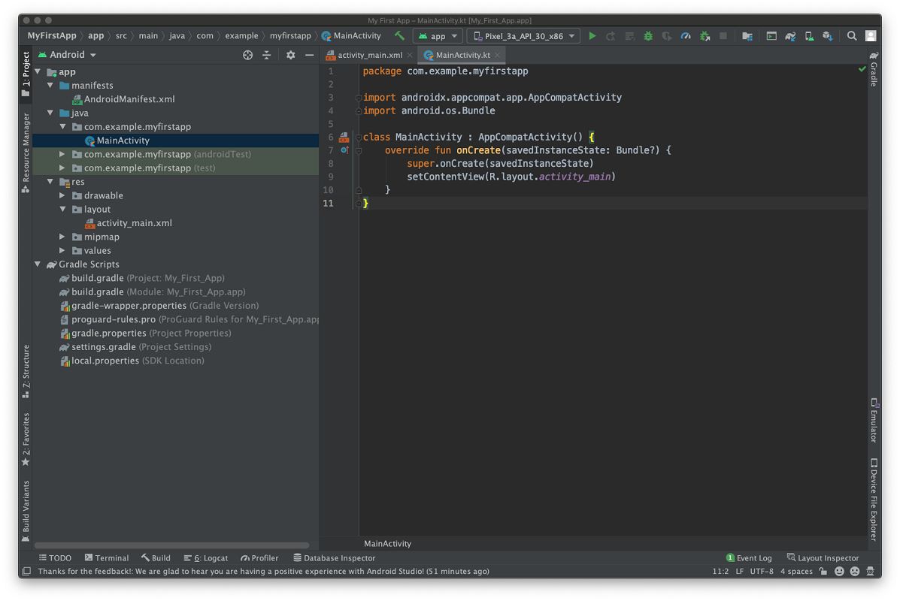
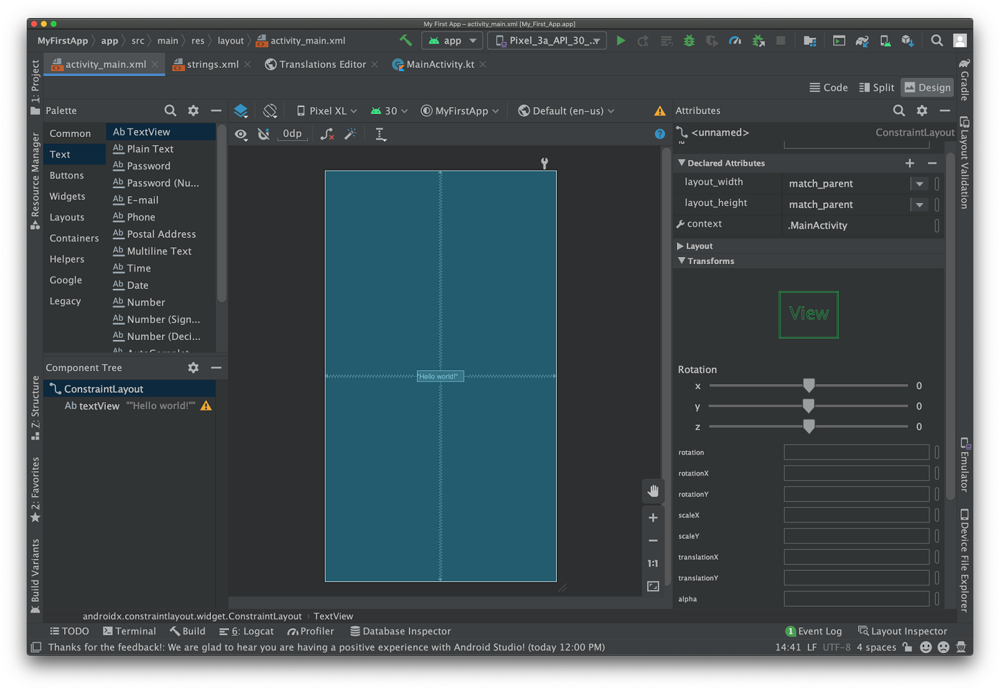
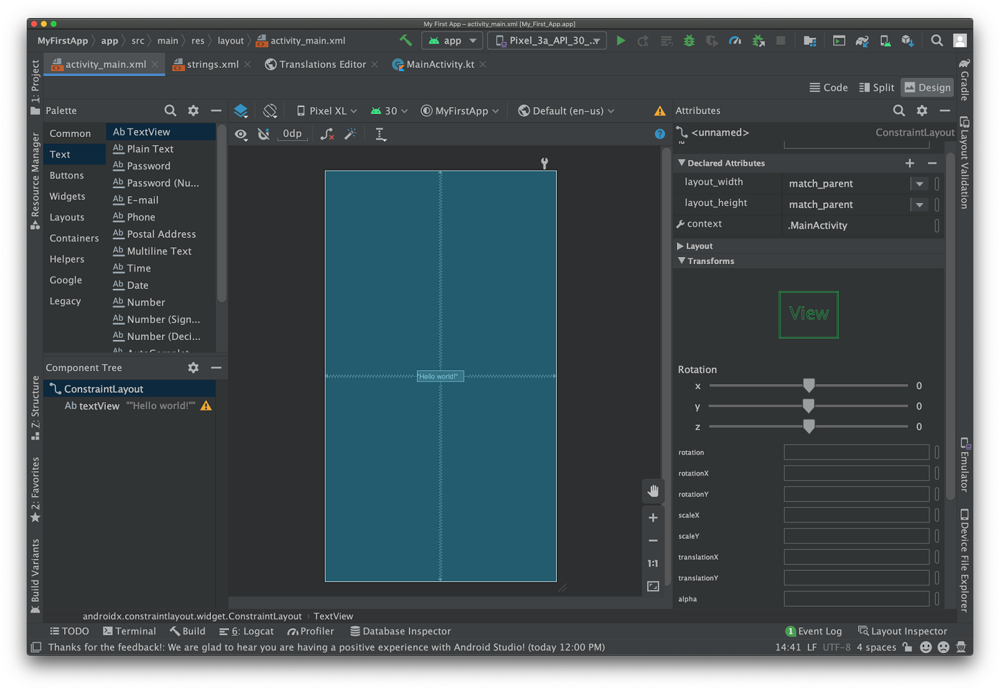

Welcome!! To Andoid Studio.
Build your first app
This section describes how to build a simple Android app. First, you learn how to create a "Hello, World!" project with Android Studio and
run it. Then, you create a new interface for the app that takes user input and switches to a new screen in the app to display it.
Before you start, there are two fundamental concepts that you need to understand about Android apps: how they provide multiple entry points,
and how they adapt to different devices.
Apps provide multiple entry points
Android apps are built as a combination of components that can be invoked individually. For example, an activity is a type of app component
that provides a user interface (UI).
The "main" activity starts when the user taps your app's icon. You can also direct the user to an activity from elsewhere, such as from a notification or even from a different app.
Other components, such as WorkManager, allow your app to perform background tasks without a UI.
After you build your first app, you can learn more about the other app components at Application fundamentals.
Apps adapt to different devices
Android allows you to provide different resources for different devices. For example, you can create different layouts for different screen
sizes. The system determines which layout to use based on the screen size of the current device.
If any of your app's features need specific hardware, such as a camera, you can query at runtime whether the device has that hardware or not,
and then disable the corresponding features if it doesn't. You can specify that your app requires certain hardware so that Google Play won't
allow the app to be installed on devices without them.
After you build your first app, learn more about device configurations at Device compatibility overview.
Where to go from here
With these two basic concepts in mind, you have two options. If you prefer staying in the main documentation, which makes it easy to branch
off to other topics to learn more about specific aspects of building an app, you can proceed to the next lesson to build your first app.
However, if you like to follow step-by-step tutorials that explain every step from beginning to end, then consider the Android Basics in
Kotlin course.
Create an android project
This lesson shows you how to create a new Android project with Android Studio, and it describes some of the files in the project.
To create your new Android project, follow these steps:
Install the latest version of Android Studio.
In the Welcome to Android Studio window, click Create New Project.
 Figure 1. Android Studio welcome screen.
If you have a project already opened, select File > New > New Project.
In the Select a Project Template window, select Empty Activity and click Next.
In the Configure your project window, complete the following:
Enter "My First App" in the Name field.
Enter "com.example.myfirstapp" in the Package name field.
If you'd like to place the project in a different folder, change its Save location.
Select either Java or Kotlin from the Language drop-down menu.
Select the lowest version of Android you want your app to support in the Minimum SDK field.
If your app will require legacy library support, mark the Use legacy android.support libraries checkbox.
Leave the other options as they are.
Click Finish.
After some processing time, the Android Studio main window appears.

Figure 2. Android Studio main window.
Now take a moment to review the most important files.
First, be sure the Project window is open (select View > Tool Windows > Project) and the Android view is selected from the drop-down list at the top of that window. You can then see the following files:
app > java > com.example.myfirstapp > MainActivity
This is the main activity. It's the entry point for your app. When you build and run your app, the system launches an instance of this Activity and loads its layout.
app > res > layout > activity_main.xml
This XML file defines the layout for the activity's user interface (UI). It contains a TextView element with the text "Hello, World!"
app > manifests > AndroidManifest.xml
The manifest file describes the fundamental characteristics of the app and defines each of its components.
Gradle Scripts > build.gradle
There are two files with this name: one for the project, "Project: My_First_App," and one for the app module, "Module: My_First_App.app." Each module has its own build.gradle file, but this project currently has just one module. Use each module's build.gradle file to control how the Gradle plugin builds your app. For more information about this file, see Configure your build.
To run the app, continue to the next lesson, Run your app.
Figure 1. Android Studio welcome screen.
If you have a project already opened, select File > New > New Project.
In the Select a Project Template window, select Empty Activity and click Next.
In the Configure your project window, complete the following:
Enter "My First App" in the Name field.
Enter "com.example.myfirstapp" in the Package name field.
If you'd like to place the project in a different folder, change its Save location.
Select either Java or Kotlin from the Language drop-down menu.
Select the lowest version of Android you want your app to support in the Minimum SDK field.
If your app will require legacy library support, mark the Use legacy android.support libraries checkbox.
Leave the other options as they are.
Click Finish.
After some processing time, the Android Studio main window appears.

Figure 2. Android Studio main window.
Now take a moment to review the most important files.
First, be sure the Project window is open (select View > Tool Windows > Project) and the Android view is selected from the drop-down list at the top of that window. You can then see the following files:
app > java > com.example.myfirstapp > MainActivity
This is the main activity. It's the entry point for your app. When you build and run your app, the system launches an instance of this Activity and loads its layout.
app > res > layout > activity_main.xml
This XML file defines the layout for the activity's user interface (UI). It contains a TextView element with the text "Hello, World!"
app > manifests > AndroidManifest.xml
The manifest file describes the fundamental characteristics of the app and defines each of its components.
Gradle Scripts > build.gradle
There are two files with this name: one for the project, "Project: My_First_App," and one for the app module, "Module: My_First_App.app." Each module has its own build.gradle file, but this project currently has just one module. Use each module's build.gradle file to control how the Gradle plugin builds your app. For more information about this file, see Configure your build.
To run the app, continue to the next lesson, Run your app.
Run your app
Run on a real device
Set up your device as follows:
Connect your device to your development machine with a USB cable. If you developed on Windows, you might need to install the appropriate
USB driver for your device.
Perform the following steps to enable USB debugging in the Developer options window:
Open the Settings app.
If your device uses Android v8.0 or higher, select System. Otherwise, proceed to the next step.
Scroll to the bottom and select About phone.
Scroll to the bottom and tap Build number seven times.
Return to the previous screen, scroll to the bottom, and tap Developer options.
In the Developer options window, scroll down to find and enable USB debugging.
Run the app on your device as follows:
In Android Studio, select your app from the run/debug configurations drop-down menu in the toolbar.
In the toolbar, select the device that you want to run your app on from the target device drop-down menu
 Click Run .
Android Studio installs your app on your connected device and starts it. You now see "Hello, World!" displayed in the app
on your device.
To begin to develop your app, continue to the next lesson.
Run on an emulator
Run the app on an emulator as follows:
In Android Studio, create an Android Virtual Device (AVD) that the emulator can use to install and run your app.
In the toolbar, select your app from the run/debug configurations drop-down menu.
From the target device drop-down menu, select the AVD that you want to run your app on.
lick Run .
Android Studio installs the app on the AVD and starts the emulator. You now see "Hello, World!" displayed in the app.
To begin to develop your app, continue to the next lesson.
Click Run .
Android Studio installs your app on your connected device and starts it. You now see "Hello, World!" displayed in the app
on your device.
To begin to develop your app, continue to the next lesson.
Run on an emulator
Run the app on an emulator as follows:
In Android Studio, create an Android Virtual Device (AVD) that the emulator can use to install and run your app.
In the toolbar, select your app from the run/debug configurations drop-down menu.
From the target device drop-down menu, select the AVD that you want to run your app on.
lick Run .
Android Studio installs the app on the AVD and starts the emulator. You now see "Hello, World!" displayed in the app.
To begin to develop your app, continue to the next lesson.
a simple user interface
In this lesson, you learn how to use the Android Studio Layout Editor to create a layout that includes a text box and a button. This sets
up the next lesson, where you learn how to make the app send the content of the text box to another activity when the button is tapped.
 Figure 1. Screenshot of the final layout
The user interface (UI) for an Android app is built as a hierarchy of layouts and widgets. The layouts are ViewGroup objects, containers that
control how their child views are positioned on the screen. Widgets are View objects, UI components such as buttons and text boxes.
Figure 1. Screenshot of the final layout
The user interface (UI) for an Android app is built as a hierarchy of layouts and widgets. The layouts are ViewGroup objects, containers that
control how their child views are positioned on the screen. Widgets are View objects, UI components such as buttons and text boxes.
 Figure 2. Illustration of how ViewGroup objects form branches in the layout and contain View objects.
Android provides an XML vocabulary for ViewGroup and View classes, so most of your UI is defined in XML files. However, rather than teach you to write XML, this lesson shows you how to create a layout using Android Studio's Layout Editor. The Layout Editor writes the XML for you as you drag and drop views to build your layout.
This lesson assumes that you use Android Studio v3.0 or higher and that you've completed the create your Android project lesson.
Open the Layout Editor
To get started, set up your workspace as follows:
In the Project window, open app > res > layout > activity_main.xml.
To make room for the Layout Editor, hide the Project window. To do so, select View > Tool Windows > Project, or just click Project on the left side of the Android Studio screen.
If your editor shows the XML source, click the Design tab at the top right of the window.
Click (Select Design Surface) and select Blueprint.
Click (View Options) in the Layout Editor toolbar and make sure that Show All Constraints is checked.
Make sure Autoconnect is off. A tooltip in the toolbar displays (Enable Autoconnection to Parent) when Autoconnect is off.
Click (Default Margins) in the toolbar and select 16. If needed, you can adjust the margins for each view later.
Click (Device for Preview) in the toolbar and select 5.5, 1440 × 2560, 560 dpi (Pixel XL).
Your Layout Editor now looks as shown in figure 3.

For additional information, see Introduction to the Layout Editor.
The Component Tree panel on the bottom left shows the layout's hierarchy of views. In this case, the root view is a ConstraintLayout, which
contains just one TextView object.
ConstraintLayout is a layout that defines the position for each view based on constraints to sibling views and the parent layout. In this way,
you can create both simple and complex layouts with a flat view hierarchy. This type of layout avoids the need for nested layouts. A nested
layout, which is a layout inside a layout, as shown in figure 2, can increase the time required to draw the UI.
For example, you can declare the following layout, which is shown in figure 4:
View A appears 16 dp from the top of the parent layout.
View A appears 16 dp from the left of the parent layout.
View B appears 16 dp to the right of view A.
View B is aligned to the top of view A.
In the following sections, you'll build a layout similar to the layout in figure 4.
Figure 2. Illustration of how ViewGroup objects form branches in the layout and contain View objects.
Android provides an XML vocabulary for ViewGroup and View classes, so most of your UI is defined in XML files. However, rather than teach you to write XML, this lesson shows you how to create a layout using Android Studio's Layout Editor. The Layout Editor writes the XML for you as you drag and drop views to build your layout.
This lesson assumes that you use Android Studio v3.0 or higher and that you've completed the create your Android project lesson.
Open the Layout Editor
To get started, set up your workspace as follows:
In the Project window, open app > res > layout > activity_main.xml.
To make room for the Layout Editor, hide the Project window. To do so, select View > Tool Windows > Project, or just click Project on the left side of the Android Studio screen.
If your editor shows the XML source, click the Design tab at the top right of the window.
Click (Select Design Surface) and select Blueprint.
Click (View Options) in the Layout Editor toolbar and make sure that Show All Constraints is checked.
Make sure Autoconnect is off. A tooltip in the toolbar displays (Enable Autoconnection to Parent) when Autoconnect is off.
Click (Default Margins) in the toolbar and select 16. If needed, you can adjust the margins for each view later.
Click (Device for Preview) in the toolbar and select 5.5, 1440 × 2560, 560 dpi (Pixel XL).
Your Layout Editor now looks as shown in figure 3.

For additional information, see Introduction to the Layout Editor.
The Component Tree panel on the bottom left shows the layout's hierarchy of views. In this case, the root view is a ConstraintLayout, which
contains just one TextView object.
ConstraintLayout is a layout that defines the position for each view based on constraints to sibling views and the parent layout. In this way,
you can create both simple and complex layouts with a flat view hierarchy. This type of layout avoids the need for nested layouts. A nested
layout, which is a layout inside a layout, as shown in figure 2, can increase the time required to draw the UI.
For example, you can declare the following layout, which is shown in figure 4:
View A appears 16 dp from the top of the parent layout.
View A appears 16 dp from the left of the parent layout.
View B appears 16 dp to the right of view A.
View B is aligned to the top of view A.
In the following sections, you'll build a layout similar to the layout in figure 4.